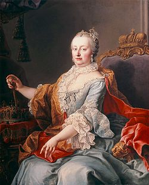

Mária Terézia (németül: Maria Theresia Walburga Amalia Christina von Habsburg; Bécs, 1717. május 13. – Bécs, 1780. november 29.) a Habsburg-házból származó, III. Károly király és Erzsébet Krisztina királyné második gyermekeként született német-római császári hercegnő, osztrák főhercegnő, magyar, cseh és német királyi hercegnő, 1740-től Ausztria uralkodó főhercegnője, magyar és cseh királynő, majd Lotaringiai Ferenccel kötött házassága révén 1745 és 1765 között a német-római császárné, a Habsburg–Lotaringiai-ház „ősanyja”.[1]
A királynő negyven évig tartó uralkodása apja 1740-ben bekövetkezett halálával kezdődött, aki az 1723-as Pragmatica sanctio elfogadásával akarta biztosítani leánya számára az öröklést. A nőági örökösödési rendet azonban többek között Poroszország, Bajorország és Franciaország is elutasította, előbbi 1740 végén még háborút is indított Szilézia meghódítására, melyből a közel kilenc évig tartó osztrák örökösödési háború született és amely területet Mária Terézia a későbbi hétéves háború során megpróbálta visszaszerezni, sikertelenül. A hercegségek háborúját 1748-ban lezáró aacheni békeszerződés után a Habsburg Birodalom megőrizte egységét és a békés fejlődés korszakába lépett.[1] Magyarország számára is jelentős hatással bírtak későbbi felvilágosult abszolutista rendeletei, többek között az 1754-ben hozott kettős vámrendszer, az 1777-es Ratio Educationis, a Nagyszombati Egyetem reformjai és Budára helyezése, és Fiume Magyarországhoz való csatolása is.[1]
Férjét, Lotaringiai Ferenc császárt még 1740-ben az összes uralma alá tartozó országban névleg társuralkodói rangra emelte. Magyar királyként férje esküt tett Pozsonyban a magyar rendek előtt 1741. szeptember 21-én, de nem koronázták meg. Férje halálát követően 1765-ben elsőszülött fiát, a későbbi II. Józsefet tette meg jelképes társuralkodóvá. Házasságából összesen tizenhat (főhercegi rangú) gyermek született, köztük két későbbi német-római császár és magyar király, egy francia királyné, egy nápoly–szicíliai királyné és egy parmai hercegné is. „Az új magyar királynő hivatalos neve II. Mária (Terézia) volt.”[2]
